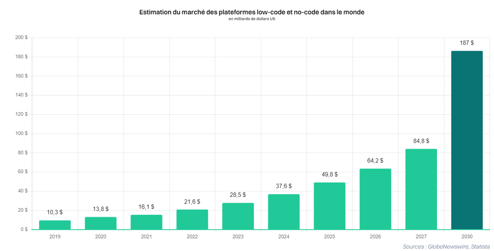
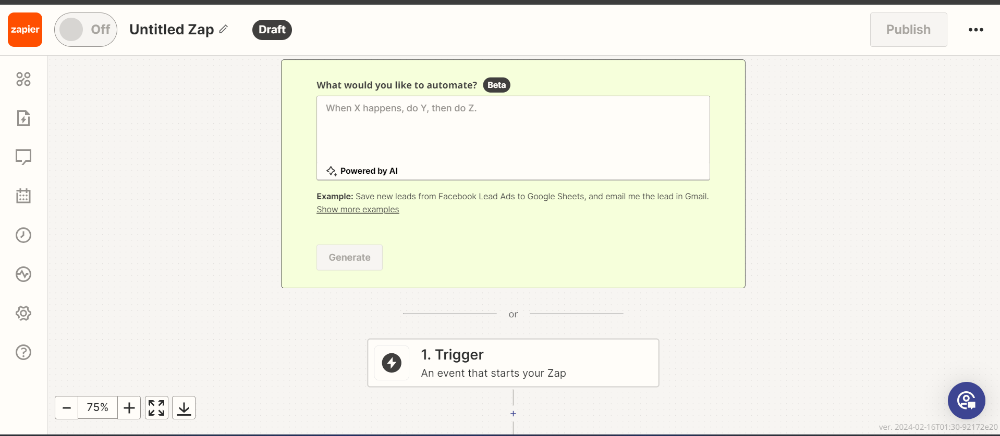

Le No-Code est en constante évolution et présente plusieurs tendances prometteuses pour l'avenir :
Les outils gagnent de plus en plus de terrain : Les outils No-Code continuent de gagner en popularité et de devenir de plus en plus accessibles à un large éventail d'utilisateurs. Cette tendance devrait se poursuivre à mesure que de nouvelles fonctionnalités sont développées et que les outils deviennent encore plus conviviaux.

Estimation du marché du No-Code
Selon les prévisions, le marché du No-Code devrait connaître une croissance exponentielle au cours des prochaines années. On estime que d'ici 2030, le marché du No-Code pourrait atteindre 187 milliards de dollars US, démontrant ainsi l'ampleur de son adoption et son impact sur l'industrie du développement logiciel.
De plus en plus utilisés par les grands groupes : Les grandes entreprises reconnaissent de plus en plus la valeur des outils No-Code pour accélérer le développement de leurs applications et rationaliser leurs processus internes. Cette adoption croissante par les grandes entreprises devrait stimuler davantage l'innovation et la croissance dans le domaine du No-Code.
Intégration du No Code dans les formations : Les établissements d'enseignement, comme Excellia Digital School en France, commencent à intégrer le No-Code dans leurs programmes de formation. Cette évolution reflète la demande croissante de compétences No-Code sur le marché du travail et offre aux étudiants une opportunité de se familiariser avec cette approche de développement dès le début de leur carrière.
Création de collectifs et associations axés sur le No Code : Des collectifs et des associations tels que No Code for Good, No-Code France ou NoCodeuses émergent pour soutenir et promouvoir la communauté No-Code. Ces initiatives offrent des espaces d'apprentissage, de collaboration et de partage de ressources pour les passionnés de No-Code, contribuant ainsi à renforcer et à développer cette communauté dynamique.
Intégration de l’IA : L'intégration de l'intelligence artificielle (IA) dans les outils No-Code ouvre de nouvelles perspectives passionnantes. Cette tendance permettra aux utilisateurs de bénéficier de fonctionnalités avancées d'automatisation, de personnalisation et d'analyse de données, ouvrant ainsi la voie à des applications encore plus puissantes et innovantes.

Exemple d'utilisation de l'IA par Zapier
Dans cette image, un prompt permet à l'utilisateur de décrire ses actions, événements ou processus souhaités. Ensuite, grâce à l'intelligence artificielle, l'outil No-Code génère automatiquement l'automatisation correspondante, sans nécessiter de codage manuel
etc.
le No-Code est en plein essor et devient rapidement un pilier du développement logiciel moderne. Les prévisions de Gartner indiquent que d'ici 2025, 70 % des nouvelles applications seront créées avec des technologies No-Code, contre seulement 25 % en 2020.